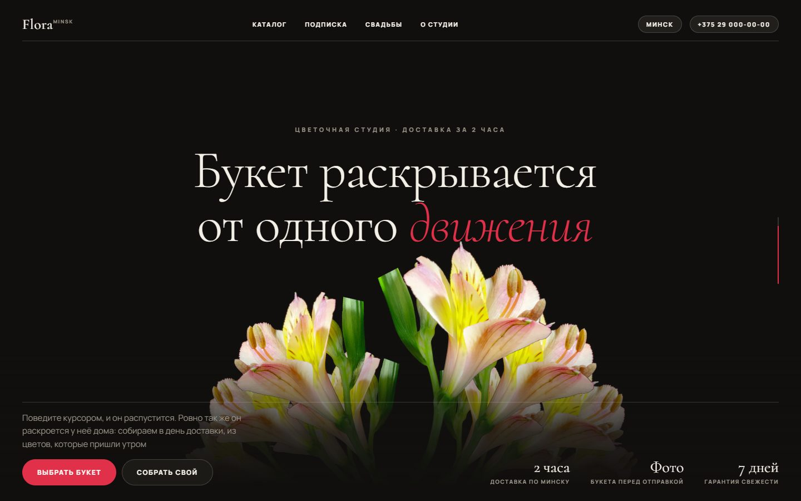
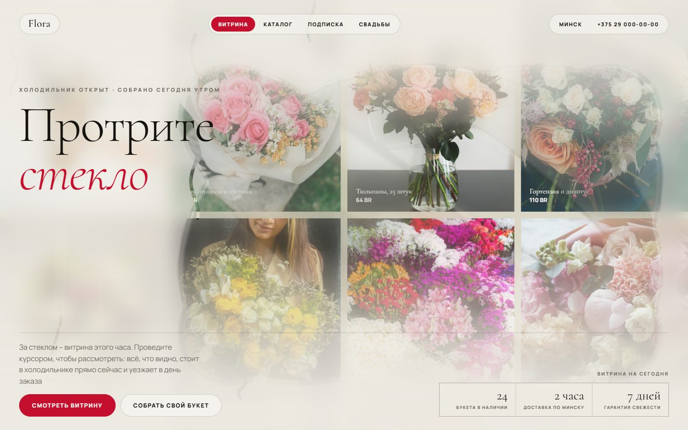
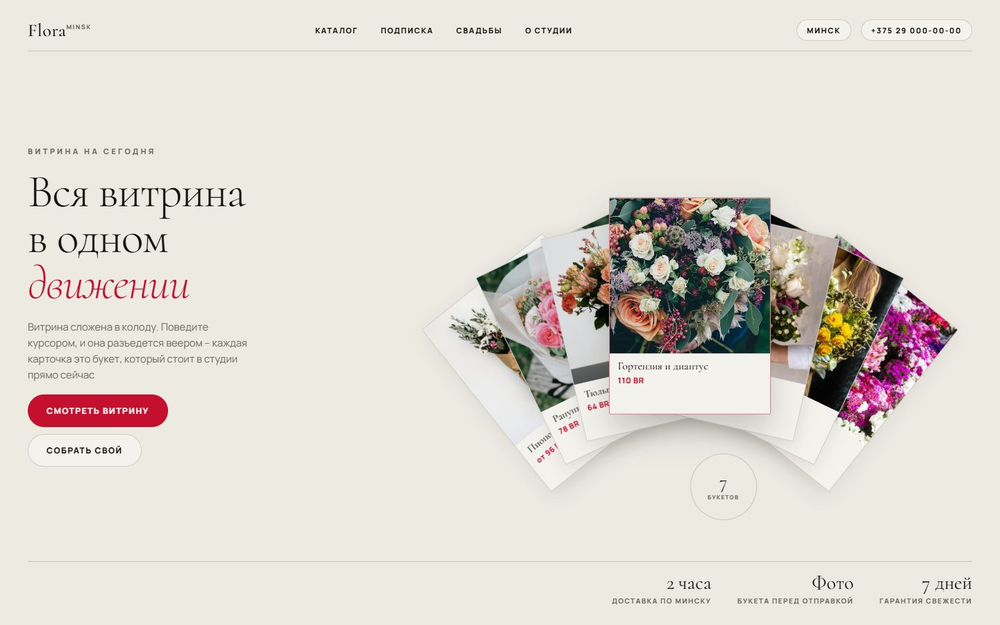

Три варианта WOW-первого экрана для цветочного магазина. Идея клиента – букет распускается при движении курсора – разобрана тремя разными способами: как настоящая съёмка распускающегося цветка, как запотевшее стекло цветочного холодильника и как витрина, которая разъезжается веером. Единый стиль во всех трёх: тёплая бумага, один фирменный красный, антиква в заголовках

Живой букет в центре экрана – не рисунок, а настоящая съёмка. Стоит бутонами, распускается ровно настолько, насколько вы подвигали курсором, и медленно складывается обратно, если остановиться

Весь экран – дверь цветочного холодильника. За стеклом витрина с ценниками, но стекло запотело. Курсор протирает его, и там, где провели рукой, видно букеты. Стекло медленно запотевает обратно, по нему стекают капли

Витрина сложена в колоду карточек. От движения курсора она разъезжается веером и набирает цвет, наведение поднимает карточку. На телефоне веер выпрямляется в обычную листалку вбок